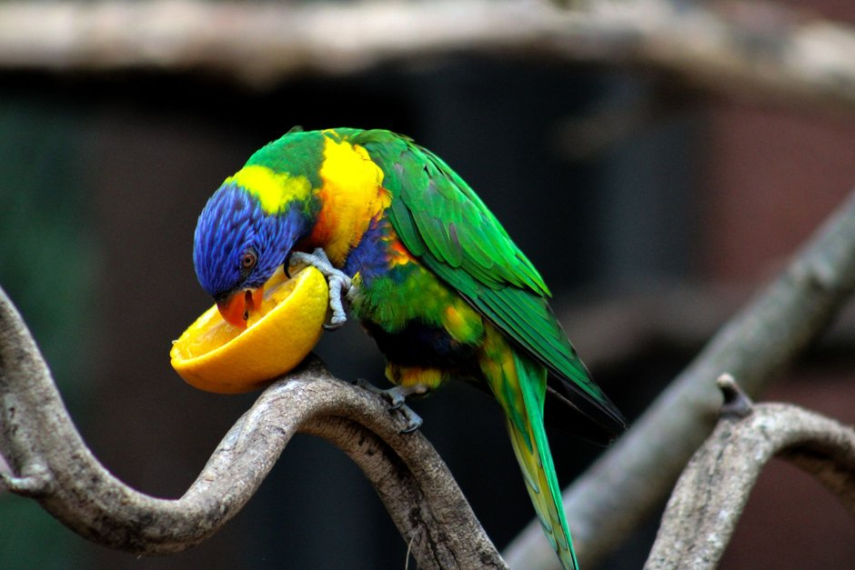
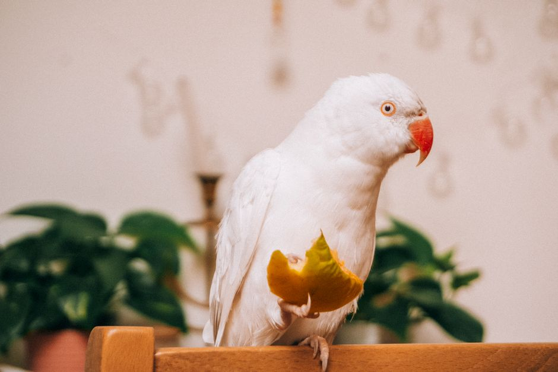

Alimentos para un equilibrio nutricional correcto en tu perroquet

Photo: Janina Ramp / Pexels
Proporcionar una alimentación equilibrada a tu perroquet es fundamental para asegurar que tenga buena salud y un comportamiento adecuado. A continuación, te presentamos cinco alimentos clave que debes incluir en la dieta de tu ave, junto con algunos consejos prácticos para que la alimentación sea efectiva y segura.
1. Semillas y granos
Las semillas y granos son la base de la dieta de tu perroquet. Debes ofrecer una mezcla equilibrada de semillas de girasol, sésamo y ajonjolí. Recuerda que solo deberían representar el 30% de la dieta total de tu ave.
Ejemplo práctico: Si tu perroquet come 200 gramos de alimentos al día, puedes ofrecerle 60 gramos de semillas y granos mezclados.
2. Frutas y verduras

Photo: Alina Vilchenko / Pexels
Incluye una variedad de frutas y verduras en la dieta de tu perroquet para asegurar que reciba todos los nutrientes necesarios. Puedes ofrecerle un plato de frutas y verduras dos veces por semana, aportando entre 30 y 50 gramos.
Ejemplo práctico: Puedes ofrecerle al perroquet una pequeña porción de manzana, pepino y zanahoria cada dos días.
3. Suplementos de vitamina A
El vitamina A es crucial para la salud de los perroquet. Puedes proporcionar suplementos de vitamina A a través de manzana, papa y calabaza. Ofrece entre 15 y 20 gramos de estas frutas y vegetales crudos o cocidos, en función de la disponibilidad y preferencias del perroquet.
Ejemplo práctico: Puedes ofrecerle a tu perroquet una cucharada de calabaza hervida en un plato cada dos días.
4. Agua pura y limpia
El agua es fundamental para el equilibrio hidrético de tu perroquet. Debes asegurarte de que siempre tenga agua fresca y limpia a su disposición. Cambia el agua al menos dos veces al día.
Ejemplo práctico: Coloca un recipiente de agua limpio y fresco en la jaula de tu perroquet al despertar y justo antes de acostarte.
5. Complementos de proteínas
Para asegurar una dieta equilibrada, es importante incluir fuentes de proteínas en la dieta de tu perroquet. Puedes ofrecerle insectos vivos una o dos veces por semana, como hormigas, tarántulas o chinches de jirafa. Estos insectos aportan proteínas y nutrientes importantes.
Ejemplo práctico: Puedes ofrecerle a tu perroquet 5-7 chinches de jirafa vivas cada dos días.
Conclusión
Recuerda que la dieta de tu perroquet debe ser variada y equilibrada para mantener su salud y felicidad. Asegúrate de mantener una rutina alimentaria regular y de observar las preferencias y necesidades específicas de tu ave. Con estos consejos, podrás proporcionar a tu perroquet una alimentación equilibrada y asegurar que reciba todos los nutrientes necesarios para vivir una vida plena y sana.
Espero que esta información te sea útil para cuidar adecuadamente a tu perroquet y garantizar que tenga una alimentación equilibrada.